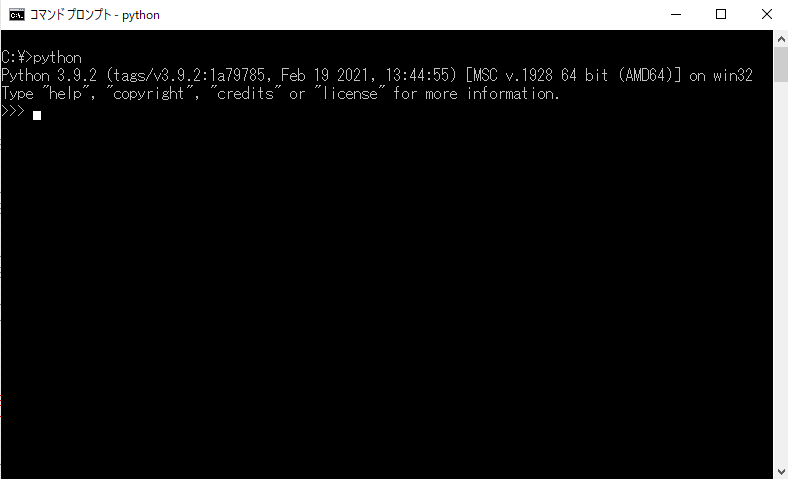

1. インストール
1.1 インストーラーのダウンロード
公式サイト: https://www.python.org/
Windows用: https://www.python.org/downloads/windows/
上記サイトからWindows installerをダウンロードする。 基本的には"Stable Releases"の最新版を選択すればよい。
"Windows installer (32-bit)"と"Windows installer (64-bit)"が存在するが、 自身のPCのWindowsのbit数に合った方を選択する。 64bitのWindowsなら32bit版と64bit版どちらのPythonでも実行できるが、 32bitのWindows上で64bit版Pythonは動かないので注意する。
なお、"Windows embeddable package"というものも存在するが、 これは主に作ったプログラムを他者に配布するときに用いるもので、 自身のローカル環境にPython環境を構築する際は必要がない。
※Pythonのインストールには「Anaconda」というディストリビューションを利用する方法もあるがここでは扱わない。 Pythonの入門書などではAnacondaの使用を推奨しているものも見かけるが、 Anacondaは必要ではないライブラリも大量に入ってくるのが難点。 ライブラリは必要になった時に必要な分だけpipからインストールするので十分であろう。 （pipとはPythonが標準で持つパッケージ管理システムのことである。第11章参照。）
Windows10のbit確認方法
Windows10の場合以下の方法で確認できる。
設定 > システム > バージョン情報
あるいはコマンドプロンプトで、「systeminfo」と入力しても確認でき、 項目「システムの種類」がx64なら64bit、x86なら32bit版のWindowsである。
1.2 インストール
先ほどダウンロードしたファイル（「python-3.9.2-amd64.exe」のようなファイル。 3.9.2は選択したPythonのバージョンを表す。）を実行する。
Installer画面
「add Python 3.x to PATH」にチェックを入れる。 PATHを設定することでWindowsがPythonを発見できるようになる。 逆に、ここでチェックを入れないと手動でPATHを通す必要があるので、 忘れずにチェックしといた方が良い。 （手動でのPATHの設定方法はAppendix Aを参照。）
1.3 動作確認
Pythonが正常にインストールできたか確認する。
コマンドプロンプトを開き、「python」と入力する。 コマンドプロンプトはWindowsシステムツールの中に入っている。 または、検索ボックスに「cmd」と入力しても探せる。

上記のような画面になればPythonのインストールは成功している。
画面に「>>>」が表示されている時はPythonが実行中であり、 コマンドプロンプトに直接処理を記述することでPythonを実行でき、 いわゆる、「対話型」でのPython実行状態である。
対話型を終了させる方法は、
- exit()
- quit()
- 【Ctrl】+【z】
Pythonが起動できることを確認したら、対話型を一度終了し、 今度は「pip」と入力しpipが正常にインストールされているかを確認しておく。
上記のような表示が出れば正常にインストールされている。